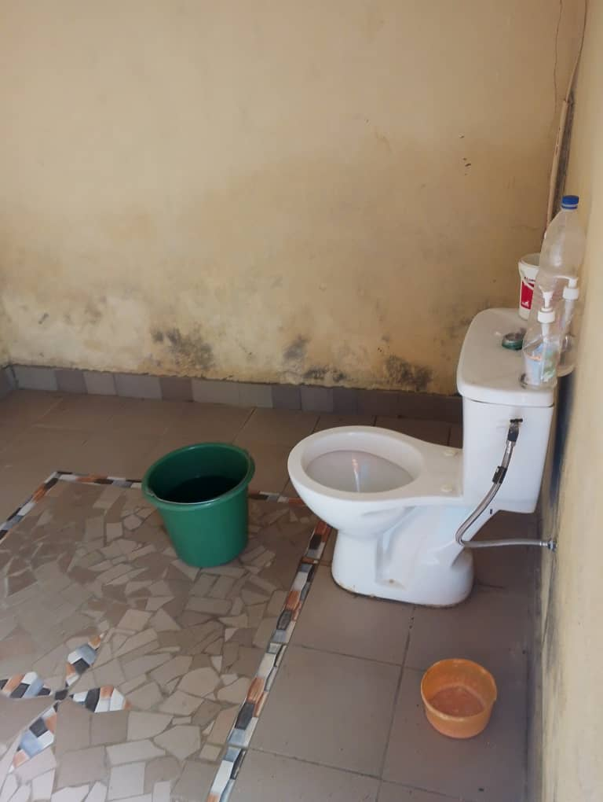
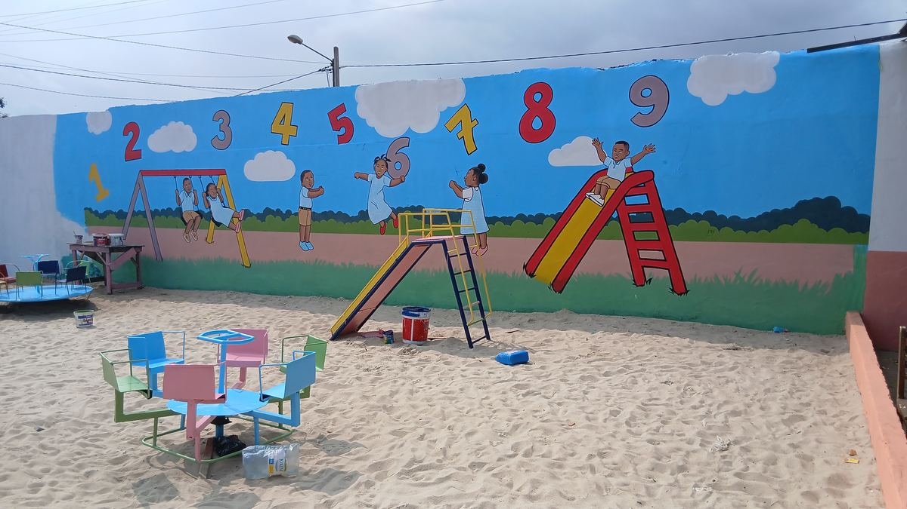
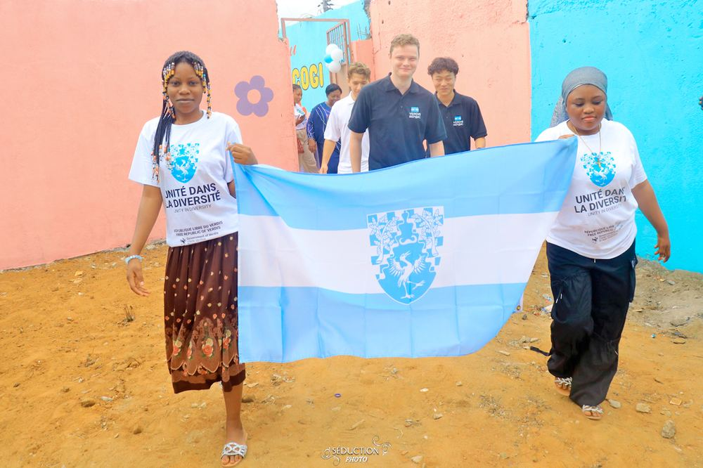

Rénovation EPP SICOGI 1 — Yopougon
Réhabilitation complète de l'École Primaire Publique SICOGI 1 à Yopougon : rénovation des sanitaires, peinture des bâtiments, création d'une aire de jeux avec fresque éducative, installation de toboggans et mobilier pour enfants. Inauguré le 09 septembre 2026 avec IPPDR, la République Libre de Verdis et la communauté locale.


